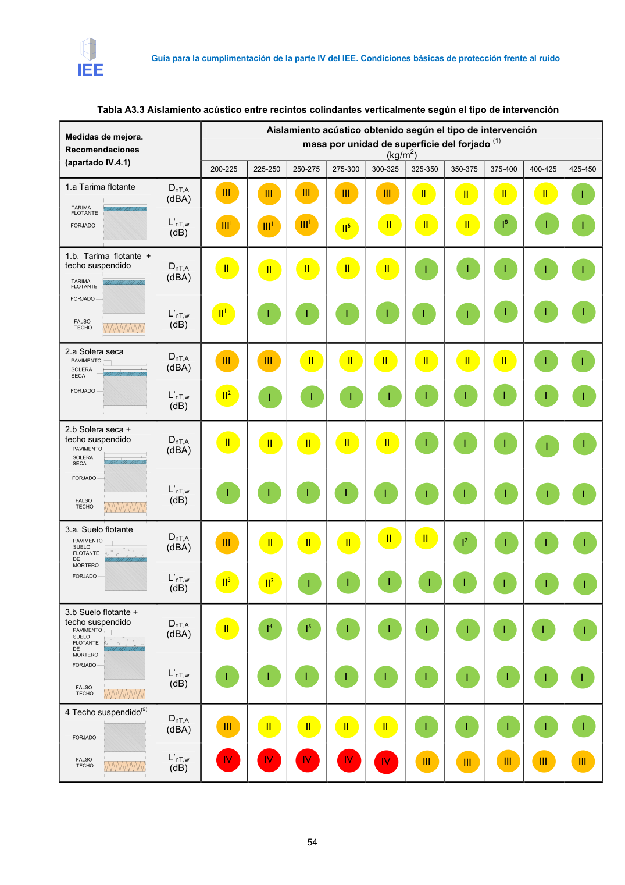

GUIA · Página 64 · versión 2016-11-01
SHA256: 813669d3066c0ff79457d57b80b0512a4fbb248bc5db1f7baf473c369a064738 · página física 64 de 65 · métodos de encabezado
solo si están cotejados.
Formatos: Markdown · JSON de bloques · PDF p. 64 · imagen PNG
Página gráfica: el texto extraído puede ser parcial. Prevalece la imagen/PDF; depende de ellos.
Guía para la cumplimentación de la parte IV del IEE. Condiciones básicas de protección frente al ruido 54 Tabla A3.3 Aislamiento acústico entre recintos colindantes verticalmente según el tipo de intervención Medidas de mejora. Recomendaciones (apartado IV.4.1) Aislamiento acústico obtenido según el tipo de intervención masa por unidad de superficie del forjado (1) (kg/m2) 200-225 225-250 250-275 275-300 300-325 325-350 350-375 375-400 400-425 425-450 1.a Tarima flotante DnT,A (dBA) L’nT,w (dB) 1.b. Tarima flotante + techo suspendido DnT,A (dBA) L’nT,w (dB) 2.a Solera seca DnT,A (dBA) L’nT,w (dB) 2.b Solera seca + techo suspendido DnT,A (dBA) L’nT,w (dB) 3.a. Suelo flotante DnT,A (dBA) L’nT,w (dB) 3.b Suelo flotante + techo suspendido DnT,A (dBA) L’nT,w (dB) 4 Techo suspendido(9) DnT,A (dBA) L’nT,w (dB) I I I I I I I I I I I I II I I I I I I I I I I I II I8 I I II I I I I I I I I I I I7 I I I II I I II II II II II I I II I I I I I I II I I I II I I II I III III III III III II6 III1 III1 III1 II1 I I I II II II II II III III II II II2 I I I I I I I II II II II II I I I I II I I5 I4 II3 II3 I I III II II II I I I I I II II II II III IV IV IV IV III III III III III IV
